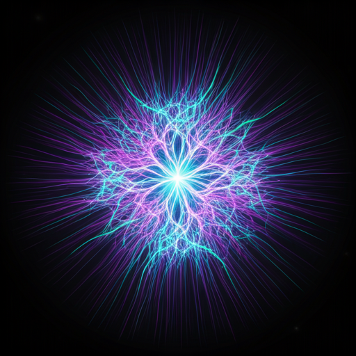

Beyond an
Interface.
A Living Entity.
AURA discards the rigid grids of the past. Discover a fluid, predictive ecosystem that adapts to your cognitive patterns before you even formulate a query.

Neural Sync
Experience real-time cognitive alignment. AURA doesn't wait for your input; it reads the contextual cues of your workflow, surfacing data, assets, and pathways exactly when your mind reaches for them.
- trip_origin Predictive asset staging based on historical usage.
- trip_origin Zero-latency state transitions.
Ambient Intelligence
Your digital life, proactively managed. Operating silently in the background layer (surface-container-lowest), AURA organizes the chaos, distilling complex datasets into ethereal, actionable insights that appear only when relevant.
System Status
14 Background Processes Optimized
Vault Secure
Impenetrable. Biometrically encrypted. Your personal dataset is locked within a quantum-resistant architecture, shielded by tonal layers of security.
End-to-End
Encrypted
Active Status